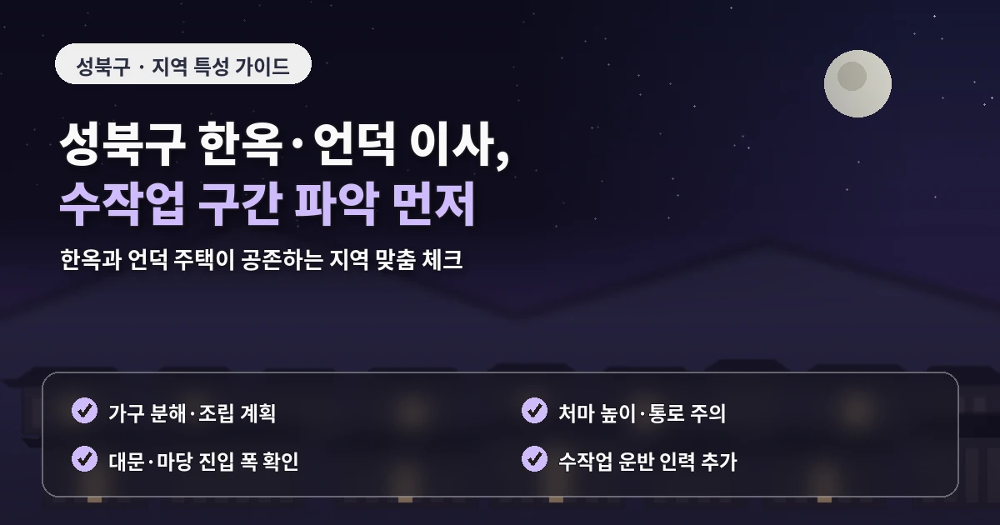
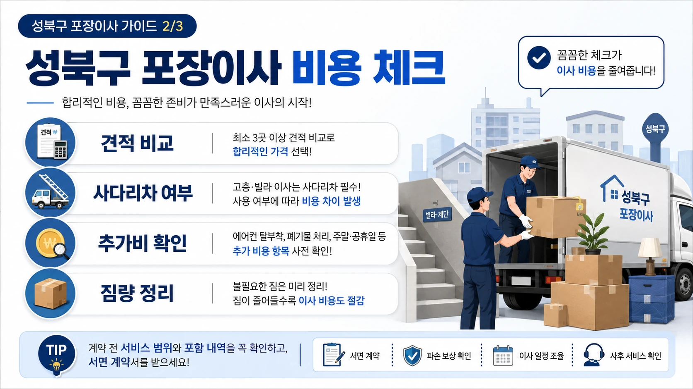
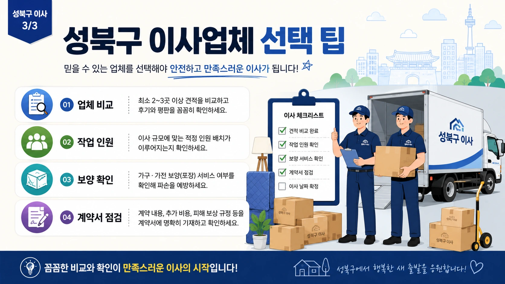

서울 성북구포장이사추천 계단작업 비용 체크
성북구 포장이사는
언덕길 주거지와 빌라,
대단지 아파트가 함께 있어
현장 조건을 자세히 확인해야 합니다.
돈암동과 길음동은 아파트 단지가 많고,
정릉동은 언덕과 주택가가 많으며,
종암동은 아파트와 빌라가 함께 있습니다.

이런 환경에서는
성북구 포장이사 비용이
단순 평수보다 계단 작업,
차량 접근성,
엘리베이터 사용 여부에 따라 달라질 수 있습니다.
견적을 좌우하는 현장 조건
견적을 받을 때는
화물차가 건물 앞까지 들어갈 수 있는지
먼저 확인해야 합니다.
차량이 멀리 서야 한다면
작업자가 짐을 옮기는 거리가 길어지고
그만큼 작업 시간이 늘어날 수 있습니다.
정릉동이나 일부 주택가처럼
경사가 있거나 골목이 좁은 곳은
사전에 사진을 전달하는 것이 좋습니다.
빌라와 다세대주택은
계단 폭과 현관 구조가 중요합니다.

대형 냉장고,
세탁기,
침대 프레임,
책장 같은 물건은
계단 이동이 가능한지,
분해가 필요한지,
사다리차를 사용할 수 있는지 확인해야 합니다.
업체 선택 전 확인할 기준
성북구 포장이사 업체추천을 볼 때는
계단 작업과 골목 작업 경험을 확인하는 것이 좋습니다.
아파트 이사만 익숙한 업체보다
언덕길과 빌라 구조에 대응해본 업체가
현장 변수를 더 잘 설명할 수 있습니다.
포장이사 비교견적은
같은 조건으로 받아야 합니다.
출발지와 도착지의 층수,
엘리베이터 유무,
차량 접근 가능 여부,
계단 이동 거리,
짐의 양,
분해가 필요한 가구를
모든 업체에 동일하게 알려야 합니다.
길음동이나 돈암동 대단지 아파트는
엘리베이터 예약과 관리사무소 규정이 중요합니다.
화물 엘리베이터 사용 가능 시간,
공용공간 보양,
차량 대기 위치를 먼저 확인하면
당일 작업 흐름이 안정적입니다.

추가비용을 줄이는 준비 방법
추가비용을 줄이려면
버릴 물건을 미리 정리해야 합니다.
책, 의류, 오래된 가구,
고장 난 소형가전이 많으면
박스 수와 작업 시간이 늘어날 수 있습니다.
특히 계단 작업이 필요한 집은
짐의 양이 비용에 직접 반영되므로
이사 전 정리가 더 중요합니다.
계약 전에는
장거리 운반비,
계단 운반비,
사다리차 비용,
가구 분해 조립 비용,
파손 보상 기준을 확인해야 합니다.
구두 설명만 듣기보다
문자나 견적서로 남겨두면
이사 당일 분쟁을 줄일 수 있습니다.
성북구 포장이사는
지형과 건물 구조가 견적에 큰 영향을 주는 지역입니다.
계약 전에 확인할 세부 항목
비용, 견적, 업체추천 정보를 비교할 때도
가격만 보지 말고
현장 대응 능력과 추가비 기준을 함께 확인하는 것이 좋습니다.
성북구 포장이사에서
도착지 조건을 함께 설명하는 것도 중요합니다.
출발지는 대단지 아파트라 작업이 쉬워도
도착지가 계단형 빌라라면
실제 작업 난이도는 크게 달라질 수 있습니다.
반대로 출발지는 언덕길 주택이지만
도착지가 신축 아파트라면
도착지의 엘리베이터 예약과 보양 기준이 중요해집니다.
양쪽 조건을 모두 전달해야
업체가 작업 시간을 현실적으로 계산할 수 있습니다.
또한 성북구는 학교와 주거지가 가까운 곳이 많아
이사 날짜가 방학 전후나 월말에 몰릴 수 있습니다.
원하는 날짜가 있다면
일정을 미리 잡고
평일 가능 여부도 함께 확인하는 것이 좋습니다.
성북구 포장이사에서는 이사 당일 이동 경로를
가족이나 관리인과 미리 공유하는 것도 도움이 됩니다.
차량이 설 위치, 계단을 사용하는 구간,
짐을 잠시 둘 공간이 정해져 있으면 작업 흐름이 훨씬 안정적입니다.
특히 언덕길이나 골목에서는 작업자가 동선을 반복해서 확인해야 하므로
사전 안내가 비용과 시간 관리에 직접적인 영향을 줄 수 있습니다.
또한 성북구는 오래된 주택과 신축 아파트가 함께 있어
보양이 필요한 범위도 건물마다 다릅니다.
낡은 계단이나 좁은 복도는 작은 충격에도 흠집이 생길 수 있고,
신축 단지는 관리 규정이 엄격할 수 있습니다.
업체에 보양 자재 사용 여부와 보호 범위를 미리 묻는 것이 좋습니다.
성북구 포장이사는 짐의 양보다 이동 난이도가 더 중요할 때가 있습니다.
계단, 경사, 골목, 차량 대기 위치를 함께 확인하면
처음 받은 견적과 최종 비용의 차이를 줄이는 데 도움이 됩니다.
견적 전 이 조건을 정리해두면 업체별 금액 차이도 더 분명하게 보입니다.
작업 전 사진 전달도 함께 준비하면 좋습니다.
자주 묻는 질문
A. 계단 폭, 차량 접근성, 대형가구 이동 가능 여부를 먼저 확인해야 합니다.
A. 단지에 따라 필요할 수 있으므로 관리사무소에 먼저 확인하는 것이 좋습니다.
A. 층수와 짐의 양에 따라 작업 인원과 시간이 달라질 수 있습니다.